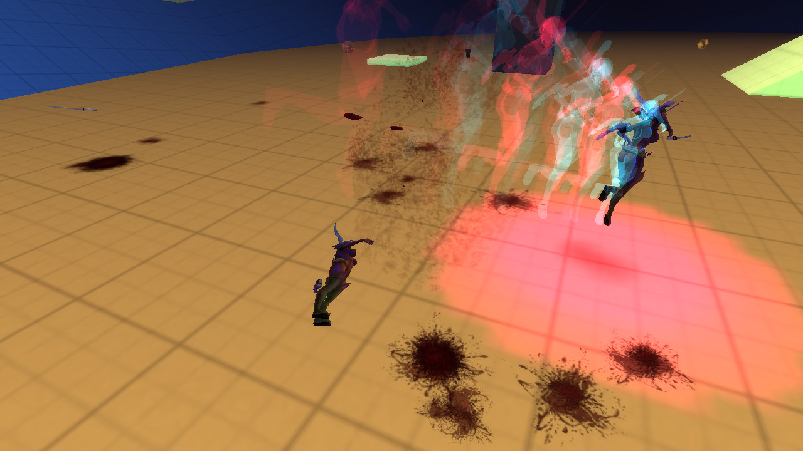
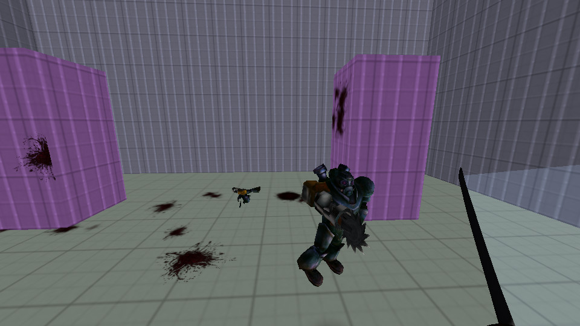
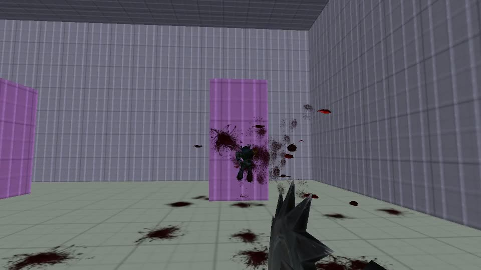
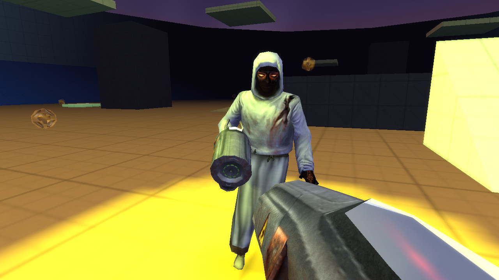

01
READ AT SPEED
You move at 320–960 u/s. Every ledge, every mechanic, every threat is legible in a quarter-second glance. N64 clarity — not realism.
Speed is the only thing holding the simulation together.
Stop moving and the world dies around you.
You are the pilot inside a low-poly world that is collapsing in real time — and you are also the operator watching that collapse on an amber-on-black ops screen. Two lenses, one frame.
You move at 320–960 u/s. Every ledge, every mechanic, every threat is legible in a quarter-second glance. N64 clarity — not realism.
The screen rewards momentum and visibly decays when you stop. Color, FOV, audio and the HUD all read off one flow value. Stillness is death.
The world is a PSX/N64 simulation. The HUD is a NERV/MAGI operator overlay. Intentionally different media, layered on the same screen.
A full Quake-into-Titanfall movement stack. Chain it and the speed compounds — and in STRAFE 64, speed is accuracy. The faster you move, the tighter you read.
Carve velocity out of thin air. A real strafe meter shows your optimal gain angle live.
Land, jump, never lose a frame. The hop counter climbs; so does the floor.
Titanfall-grade momentum slides — locked speed, low camera, kinetic slow-mo.
Kick off any surface. Reset your air-jump and keep the line going skyward.
A second jump mid-flight with a view-punch that sells every meter of height.
Tap to blink. A clean directional burst that feeds straight back into a hop.
Run off a ledge and you still get the jump. Forgiveness tuned to the millisecond.
Instant trace-attach with a spring-damper rope. Swing, yank, slingshot — never stiff.
Catch ledges, cap your fall, keep your flow. The kit has no dead frames.
STRAFE 64's signature: the world clock is bound to your motion. Stand still and time near-freezes to a crawl. Swing the blade and time surges forward in a rush. You are not in bullet-time — you are the clock.
STRAFE 64 is a synesthetic machine. Every shader breathes with the soundtrack — bass, mid and high envelopes warp the geometry in real time. And in bullet-time the audio itself pitch-bends with the world clock: stretch the moment and the music stretches with you.
assets/music/.No stopping to fight. The blade is part of the line — combo strings, dismemberment, blade-trail arcs, and a guard that parries incoming bolts straight back at the shooter. Swing and the world clock surges with you. Speed is the defense.




VOID-BLUEWhen you can't close the gap, the vectorgun does. One void-blue vector bolt — the brightest thing on the screen at the instant of fire — fast, surgical, and tuned to the same rule as the blade: speed is lethality.
A bullet-time duel against the Assassins. Deep-blue ring, audio-reactive trails, sword or vectorgun. Time bends with every swing.
Last-pilot-alive. Your speed-trail hardens into damaging walls behind you. Fence your rivals into their own momentum.
A vertical melee arena built around a centerpiece archetype — spire, spiral tower, pillar forest, hollow ring. Momentum portals included.
Race the clock and your own replay. The ghost dilates with your slow-mo; the finish line stays honest. Beat green, beat yourself.
Every map is generated on demand. The world is flat-shaded vertex-lit geometry under a Bryce dusk sky — and the mechanic of a section is encoded in its color, so you read what to do before you arrive. Learn the vocabulary once; it holds forever.
Music drives the shaders. Bass, mid and high envelopes warp the world geometry in time with the track.
Sun, ambient occlusion and bounce baked into vertex color. HDR, bloom and sun-shadows on the GL2 path.
Generate a fresh map from the menu — pick the archetype, weapon and graphics, and drop straight in.
Every copy ships with a signed Ed25519 license key. One purchase, every platform, free updates as the simulation grows.
Built on GPL foundations (OpenArena / ioquake3). Keys are cryptographically signed; lose the world, keep the line.